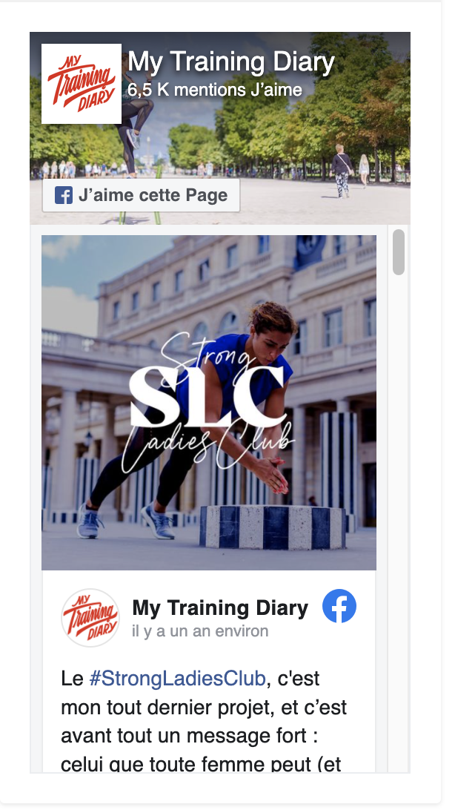

3 Juin, 2019 | TRAINING
Mes 3 mois à Sydney Hi 🙂 Déjà 3 mois que j’ai embarqué direction Sydney, sans trop savoir ce qui...
Bienvenue
Bienvenue sur My Training Diary, le blog destiné à tous les passionnés de Training, amateurs ou professionnels, débutants comme confirmés. J’y partage mon quotidien de sportive et mes conseils de Personal Trainer, mais aussi les rencontres et les découvertes qui font chaque jour grandir ma passion pour le Training.
FACEBOOK

MY TRAINING TRIP
Découvrez My Training Trip, le 1er guide touristique 100% sport, dont la sortie est prévue pour novembre 2016. En savoir plus...